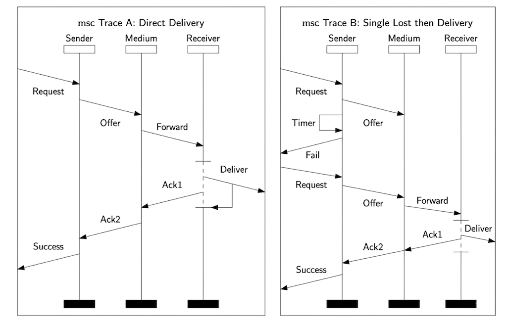

Experiments / Gemini 3 - Thinking / Example 8.docx
This page is a uniformly styled HTML rendering of the original Word file. The original Word file is retained in the data folder for verification.
Question: Consider the following High-Level Message Sequence Chart and its components represented in the attached two files. Generate two MSCs included in the semantics of the High-Level Message Sequence Chart.


Answer:
